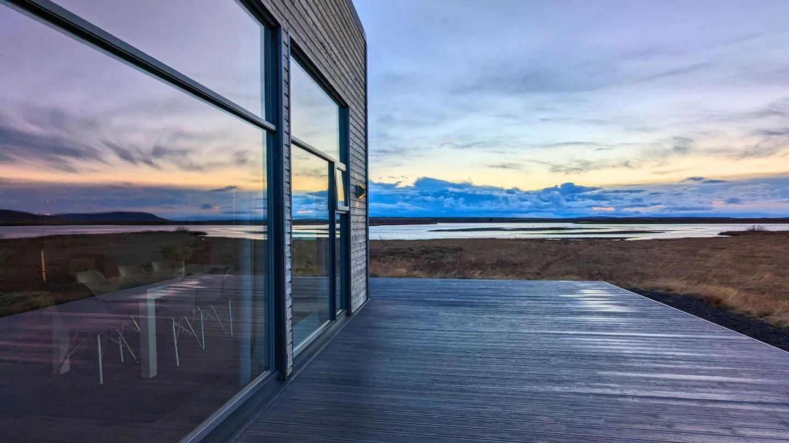
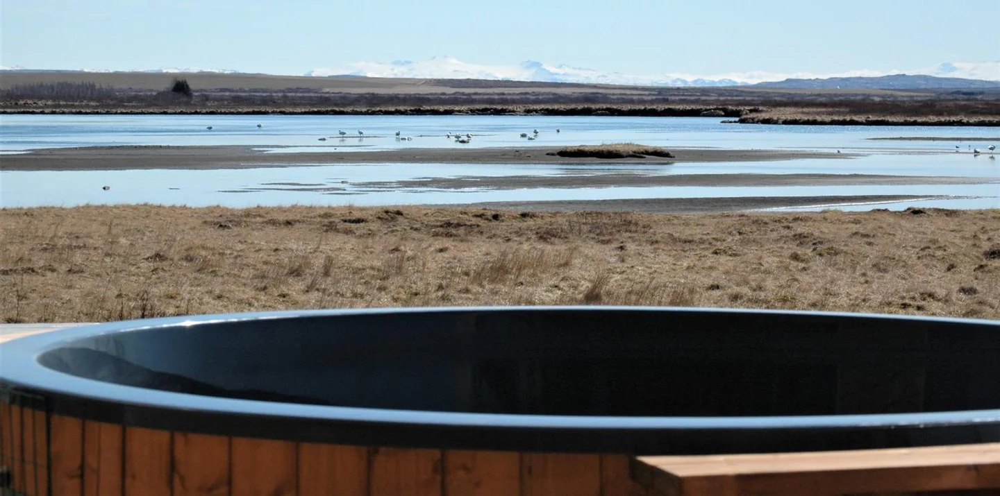

Austurey · Apavatn · Golden Circle
The lake is included.

Austurey 1, Bláskógabyggð, Iceland. Eight cottages for two and a villa for eight, on a sheep farm at the shore of Apavatn, seventy kilometres from Reykjavík.
A sheep farm by the lake
In the family since 1926, with guests since 2018.
Austurey is a working farm. Lárus and Magndís still raise sheep here, run the water utility and part of the heating utility, and a stretch of Apavatn and the Hólaá river lie inside the farm's land. The first six cottages opened in June 2018, the villa two years later where the river meets the lake, and two more cottages in the summer of 2025.
Every cottage faces the lake with the others out of sight. Guests rate the stay 9.7 on Booking.com from three hundred and ninety reviews, and the villa a straight ten. Almost every one of those bookings went through a platform. This page is the other door.
The staysThe stays
One villa, eight cottages, nine places to sleep by the water.
The eight cottages are identical: for two, a 160 cm bed, a kitchenette, a heated veranda and a lake view. The villa is the one that differs.
Book here and
the lake is yours.
- The permit is included at the villa. In their own words: guests booking directly through the website receive complimentary fishing permits for Lake Apavatn.
- A discount on permits at the cottages. Cottage guests who book direct get a special price on lake and river permits.
- Kayaks and rods are on site. Two kayaks on the villa's shore in summer, rods to borrow, brown trout in the lake and char in the river.
- The best price is here. No platform takes a share, so the direct rate is the lowest one there is.
Around you
The Golden Circle, from a quiet side of it.
Distances as Austurey publishes them: Þingvellir around twenty minutes, Laugarvatn ten kilometres, Geysir and Gullfoss on the same loop. Reykjavík is about an hour and a quarter.
Late August to April
The lights come to the shore.
Very little light around the farm, and the whole sky over the lake. In summer the nights never get dark and the sheep are out until midnight.
Check your datesThe lake
Two waters, one permit desk: the farm's own.
Permits for both are sold at Austurey. Bring your own gear or borrow a rod; the villa's kayaks are on the shore all summer.
Lake Apavatn
1 February to 10 October. Brown trout, some of them large. Steps from every cottage and the villa's beach.
Hólaá river
1 April to 24 September. Arctic char, and salmon in the peak of the season. A short drive, and a limited number of permits each day, so book those ahead.
From guests
“Austurey Cottages is simply amazing! The cabins are cozy, spotless, and surrounded by breathtaking views of Icelandic nature.”
Guest review, published on austurey.is
“Lárus and Magndís provided truly excellent service. The villa was beautifully designed with panoramic windows, heated floors, and a well-equipped kitchen that made us feel completely at home.”
Villa guest, published on austurey.is
“Staying here was the highlight of our holiday for Christmas 2024. Everything within the cottage was perfectly designed and thought out.”
Christmas 2024, published on austurey.is
The cottages rate 9.7 on Booking.com from 390 reviews; the villa 10 from 23. Read from Booking.com on 1 September 2026.
Book direct
Pick your nights.
Booked straight with the farm, in their own checkout. Villa guests get the fishing permit included; cottage guests a discount on it.
Choose your arrival night to begin.
Continue to Austurey's checkoutOpens the farm's own booking page. Availability and the exact rate are confirmed there.
Questions
Before you book.
Is the fishing permit really included?
For the villa, yes: book directly through Austurey and the permit for Lake Apavatn comes with the stay. Cottage guests who book direct get a special discount on permits. Rods can be borrowed and the villa's kayaks are on the shore in summer.
When is the fishing season?
Lake Apavatn from 1 February to 10 October, the Hólaá river from 1 April to 24 September. River permits are limited each day, so ask for those in advance.
Can we see the northern lights?
From late August until April, on clear nights, from the cottages and the villa. There is very little light around the farm.
What is in a cottage?
A 160 cm double bed, a private bathroom with a shower, a kitchenette, a dining table, a flat screen, free Wi-Fi, binoculars for the birds, and a heated veranda with garden furniture and a gas grill, facing the lake.
And in the villa?
184 square metres, four bedrooms for eight, two bathrooms, a full kitchen, a fireplace, an indoor sauna, a large hot tub on the terrace facing the lake, a washing machine and dryer, covered parking and an EV charger.
Is there a restaurant?
No. The cottages have kitchenettes and the villa a full kitchen. Laugarvatn, ten kilometres away, has restaurants, shops and the Fontana baths.
Can I bring a pet?
Pets are not allowed.